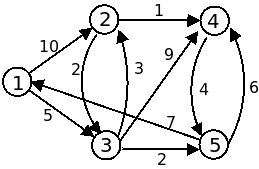

Aula Prática #10 - Distâncias Mínimas
(semana de 23/05 a 27/05)
Exercícios para submissão
Para efeitos da nota atribuída à resolução de exercícios ao longo do semestre, os exercícios a submeter desta aula são:
Prazo de submissão: 12 de Junho (submeter no Mooshak de DAA)
Não se esqueçam que qualquer ajuda que tenham recebido de outros colegas deve ser reconhecida nos comentário do programa que submetem.
Depois do prazo os problemas continuarão disponíveis no Mooshak, mas as submissões não contarão para a sua nota. Relebre que cada aula vale 10% da nota desta componente.
Para um problema contar tem acertar todos os testes. Mesmo que resolva todos os problemas, o máximo numa aula é de 100%.
Conteúdos das teóricas
Nesta aula iremos abordar conceitos de Distâncias Mínimas em Grafos. Será por isso conveniente ver o que foi falado nas teóricas:
- Slides (capítulo "8 - Grafos: Distâncias Mínimas")
- Vídeos: (vídeos #20 e #21)
Exercício 1) Introdução ao algoritmo de Dijkstra
Comece por fazer download do código exemplo do algoritmo de Dijkstra:
Se costuma usar C, a sugestão é que use a última versão, que é essencialmente C com excepção das listas e do uso do set, que já estão implementadas em C++ usando STL. A ideia é que progressivamente possa ir começando a usar as estruturas de dados úteis que o C++ tem e o C não, continuando no essencial a programar em C "normal" e usando C++ apenas para essas estruturas de dados.
- Compile e execute o código usando como input o ficheiro dijkstra.txt, que corresponde ao grafo da figura seguinte (o mesmo que é usado na explicação do Dijkstra nos slides):

- Procure compreender todos as linhas do código dado. Experimente mudá-lo e começar de um outro nó que não o 1. Antes de executar consegue prever o output?
- Se quisesse imprimir também o caminho mínimo em si (e não apenas a distância) como poderia fazer? Experimente modificar o código de acordo com o que pensou e verifique se funciona
Exercício 2) Resolvendo um problema usando o Dijkstra

Usando como base o código dado no exercício anterior, implemente e submeta uma solução para o problema [DAA 033] Viagem para as aulas.
Dicas:
- A sua primeira tarefa é atribuir um número a cada nome de um nó. No final da leitura o grafo construido deve ser entre "números" e não entre "strings". Pode por exemplo fazer uma função find que recebe uma string e devolva um inteiro. Para isso pode por exemplo:
- Usar um array auxiliar que guarda os nomes. Para saber o número, procure (linearmente) nesse array. Caso não exista o nome, adicione e devolva o novo número. Como terá de procurar \(\mathcal{O}(|E|)\) vezes (2 para cada aresta), esta solução "custa" \(\mathcal{O}(|E| \times |V|)\). Isto passa no tempo para os limites dados no enunciado.
- Outra alternativa mais eficiente é usar um map (ou TreeMap) que mapeia strings em inteiros. Como a implementação em C++ (ou Java) é uma red-black tree, esta solução "custa" \(\mathcal{O}(|E| \times \log |V|)\)
- Para descobrir a distância mínima de um ponto a outro num grafo pesado podemos usar o algoritmo de Dijkstra [ver slides 7 a 14]
- Uma versão "naive" do algoritmo de Disjktra (um ciclo para descobrir o mínimo, ou seja, um choose_best em \(\mathcal{O}(|V|)\), resultaria em tempo \(\mathcal{O}(|V|^2)\). Isto passa no tempo para os limites dados no enunciado.
- Se usar como base o código dado, consegue atualizar as estimativas de distância e escolher a menor em tempo logarítmico, pelo que a solução fica \(\mathcal{O}(|E| \times \log |V|)\).
Exercício 3) Distâncias negativas e algoritmo de Bellman-Ford
Implemente e submeta uma solução para o problema [DAA 034] Buracos negros.
Dicas:
- Este problema pede para descobrir se existem ciclos negativos
- Para descobrir a distâncias mínimas e saber se existem ciclos de soma negativa podemos usar o algoritmo de Bellman-Ford, que tem uma complexidade temporal de \(\mathcal{O}(|V| \times |E|)\) se usarmos listas de adjacências [ver slides 17 a 21]
- Se usarem como base a implementação do Dijkstra tenham cuidado com o uso do INT_MAX (pois somado a algo dá overflow) - sugere-se usarem por exemplo INT_MAX/2.
Exercício 4) Fecho transitivo e o algoritmo de Floyd-Warshall
Implemente e submeta uma solução para o problema [DAA 035] Ligações aéreas.
Dicas:
- O que o problema pede chama-se de fecho transitivo de um grafo.
- Como o \(|V|\) máximo é pequeno (26) podemos usar o algoritmo de Floyd-Warshall, que demora tempo \(\mathcal{O}(|V|^3)\) [ver slides 22 a 31]
Exercício de Desafio
Todas as semanas vou colocar disponível pelo menos mais um exercício um pouco mais desafiante.
Para esta semana o desafio é de nível de um CIIC (Concurso Ibero-Americano de Informática), um concurso de programação para os melhores alunos pré-universitários dos países da América Latina (ex: México, Argentina, Brasil) e da Península Ibérica (Portugal e Espanha). O problema foi criado por mim e foi usado no CIIC'2012, estando disponível para submissão no Mooshak:
Se já tiverem feito tudo e estiverem "presos" neste, e quiserem mesmo fazer o desafio, podem contactar-me para eu "dosear" as dicas, sabendo que este problema é substancialmente mais complicado que os outros desta aula.